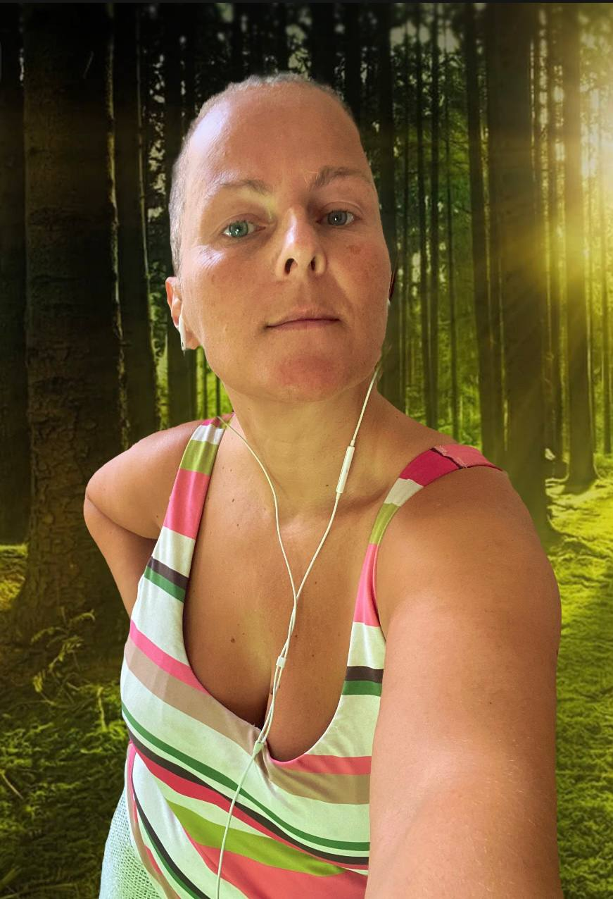

A jövőképed nem kötelességekből épül fel, hanem abból, amitől elevennek érzed magad. Tisztábban látod, merre visz a saját belső vonzásod, és milyen helyet szeretnél elfoglalni a saját életedben.
AMY DOROTHY RONJA LANG · HOLISZTIKUS ÉLETMÓDKÍSÉRÉS
A szépség már itt van.
Az erő már itt van.
A természet minden bölcsességét eleve magában hordozza. Nem javításra vár, hanem arra, hogy kibontakozhassék.
Három hónap, amely alatt a tested, az otthonod és az életed újra azt fejezi ki, ami valóban lenyűgöz.
Több mint 20 év megélt tapasztalat
Élő táplálkozás
Klasszikus feng shui
Sámáni folyamatkísérés
Numerológiai szimbólummunka

Amy Dorothy Ronja Lang
Örülök, hogy itt vagy.
Nem hiszek abban, hogy az embert előbb meg kellene javítani ahhoz, hogy az élete széppé válhasson. A szépség már itt van. Az erő már itt van. Legtöbbször nem több önfejlesztésre van szükség, hanem egy tiszta térre, amelyben az, ami valóban a tiéd, újra láthatóvá, érezhetővé és élhetővé válik.
A kísérés, amelyet kínálok, összekapcsolja az élő táplálkozást, a természetközelséget, a tudatosan alakított tereket és a szimbolikus önreflexiót. Nem módszerek gyűjteményeként, hanem utakként egy olyan élet felé, amelyben több a varázs, a ragyogás, az eredetiség és a természetes vonzerő.
Személyes edukatív kísérés
Online
HU · DE · EN · NL
WhatsApp H–P
Mi változik meg három hónap alatt
Nem azért, mert más ember leszel. Hanem azért, mert tisztábban előtűnik, ami régóta benned él – és a hétköznapjaid elkezdik követni ezt a belső igazságot.
Az élő táplálkozás, a természetes ritmusok és az egyszerű szokások táplálják az energiát, a tiszta fejet, az élvezetet – és annak a testnek a szépségét, amely mindent megkap, amire szüksége van.
Egyre világosabban megkülönbözteted azt, ami csupán észszerűen hangzik, attól, ami valóban hozzád tartozik. A döntéseid letisztulnak, mert a saját természetedből fakadnak.
A tereid nem egy idegen eszménykép szerint formálódnak. A te értékeidet, a te ízlésedet és annak az életnek a hangulatát hordozzák, amelyet élni szeretnél.
Ami megkülönböztet, az figyelmet, formát és helyet kap a mindennapjaidban. A képességeidnek nem kell tovább a háttérben várakozniuk: végre hatni kezdhetnek.
A hétköznapjaid többé nem csak elintéznivalókból állnak. Újra színt, izgalmat és szépséget kapnak – olyan tevékenységek, emberek és élmények révén, amelyek valóban megérintenek.
Amikor a tested, a tartásod, a tereid és a döntéseid összhangba kerülnek, kisugárzás születik. Nem megrendezett látványként, hanem az önmagaddal való csendes, látható egybecsengésként.
A kísérés elemei
Minden terület ugyanazt a célt szolgálja: hogy a szépség, az elevenség és az irány ne maradjon puszta gondolat, hanem alakot öltsön a testedben, a tereidben és a mindennapjaidban.
Élő táplálkozás
A természetes, növényi ételek frissességet, színt és azonnali elevenséget hoznak a hétköznapokba. A középpontban az élvezet, az egyszerűség és egy olyan testérzet áll, amely hordoz és megtart.
- Természetes táplálkozás és növényi bőség
- Ételtársítás és természetes napi ritmusok
- Hétköznapokban is élhető, élvezetes rutinok
- Nyerskoszttudás mint elmélyítő lehetőség
- Testi ragyogás mint megélt tapasztalat
Sámáni folyamatkísérés
A természet képei, a rítusok, a történetek és a szimbólumok olyan rétegeket szólítanak meg, amelyeket az elemzés nem mindig ér el. Teret nyitnak az érzékelésnek, az átmenetnek és a belső iránynak.
- Természetközeli önreflexiós impulzusok
- Rítusok átmenetekhez és új életszakaszokhoz
- Képek és történetek mint tükrök
- A személyes életvízió elmélyítése
Klasszikus feng shui
A tereink alakítják azt, amit nap mint nap látunk, érzünk és lehetségesnek tartunk. A klasszikus feng shui az iránytű-módszert olyan térformálással köti össze, amely támogatja a tájékozódást, a szépséget és a mozgást.
- Az iránytű-módszer alapjai
- Térhatás, rend és természetes anyagok
- Alakítási impulzusok otthonra és munkára
- Az otthon mint látható életirány
Numerológiai szimbólummunka
A számokat szimbolikus nyelvként olvassuk. Nem merev identitást írnak elő, hanem új nézőpontokat nyitnak a tehetségekre, a kifejezésmódokra, a ritmusokra és az életképekre.
- Személyes számképek mint az önreflexió tere
- Impulzusok tehetségről és kifejezésről
- Éves ritmusok mint alkotó iránymutatás
- A saját jövőkép elmélyítése
Így dolgozunk együtt
Személyesen, figyelmesen és sablonok nélkül. A kísérés nem merev programot követ, hanem azt, ami az életedben valóban formát szeretne ölteni.
1
Ismerkedés
Húsz percben arról beszélgetünk, mi az, ami lenyűgöz, mi felé tartasz, és hogy az én kísérésem illik-e hozzád.
2
Három hónap megtestesülés
Beszélgetések, tudásimpulzusok, önreflexiós kérdések és WhatsApp-kísérés kapcsolja össze a táplálkozást, a testet, a tereket, a hétköznapokat és az életvíziót.
3
A saját formád
A végén nem egy idegen eszmény áll, hanem egy tisztább, elevenebb kép arról, hogyan szeretnél lakni, hatni, enni, dönteni és élni.
Mire képes a megélt változás

Nicole Vogt
Korábban több átalakulási programot is kipróbáltam. Egyik sem arról szólt, amire valójában szükségem volt.
Három kisgyerekkel, akiknek külön főzök, miközben a saját utamat keresem – szétszakítva éreztem magam. Hogyan tiszteljem azt, amit a testem számára helyesnek ismerek fel, miközben a családom másképp él? Hogyan adjak újra teret a saját szükségleteimnek annyi év után, amikor mindent másoknak adtam?
Aztán megtaláltam Amyt.
Nem nyomott a kezembe egy mindenkire egyformán szabott tervet. Megmutatta, hogyan járhatom a saját utamat, miközben a családom a magáét járja – tisztán, konfliktusok nélkül, és anélkül, hogy családi projekt lett volna belőle.
WhatsAppon (hétfőtől péntekig) mindig ott volt. Egyetlen részlet sem volt neki túl apró. Minden bizonytalanságomra, minden kérdésemre gyakorlati választ adott. Semmi elmélet. Valódi megoldások.
Amikor nem tudtam, mit kezdjek a családi étkezésekkel – megmutatta, hogyan lehet.
Amikor kételkedtem, hogy tényleg végig tudom-e csinálni – nekem adta a megingathatatlan hitét. Hogy működik. Hogy meg tudom csinálni. Hogy nem kell nehéznek lennie.
Három hónappal később:
Csúcsformában érzem magam. Tele vagyok energiával. A fejem tiszta. Kevesebb alvás is elég, több bennem az életerő, és újra önmagam vagyok – valóban önmagam, nem csupán „anya”.
És akkor jött a pillanat, amelyet soha nem felejtek el:
A családban mindenki elkapta az influenzát. Láz. Köhögés. A teljes műsor.
Egyedül én nem betegedtem meg.
A férjem – aki mindig úgy gondolta, hogy az én megközelítésem „egy kicsit sok” – rám nézett, és azt mondta: „Te mit csinálsz másképp? Én is ki akarom próbálni.”
Ma már kérdezi, mit eszem. Érdeklődik. Rajtam látja az eredményt.
Nem azért, mert meggyőztem. Hanem mert látta, milyen jól vagyok. Hogy nézek ki. Hogy egészséges maradtam, miközben körülöttem mindenki megbetegedett.
Amy a saját hitét adja át neked. És egyszer csak már nem kételkedsz – egyszerűen tudod, hogy működik.
Az első lépés előtt
Kinek szól ez a kísérés?
Azoknak a nőknek, akik nem még több önoptimalizálást keresnek, hanem egy életet, amely szebbnek, elevenebbnek, tisztábbnak érződik – és összetéveszthetetlenül a sajátjuknak.
Milyen szerepet játszik a táplálkozás?
A test nem mellékszereplő. Az élő táplálkozás teremti meg a frissesség, az energia, az élvezet és a ragyogás alapját, amelyen a többi változás is könnyebben ölt formát.
Mit jelent az élő táplálkozás?
Természetes, növényi ételeket, színeket, frissességet, változatosságot és összhangban lévő ritmusokat. A nyerskoszt és az ételtársítás helyet kaphat benne anélkül, hogy merev rendszerré válna.
Mit jelent a sámáni folyamatkísérés?
A természet képei, a rítusok, a történetek és a szimbólumok az érzékelés és a személyes önreflexió útjaiként szolgálnak. Új nézőpontokat nyitnak, anélkül hogy kész igazságot húznának rád.
Jogilag hogyan sorolható be ez a szolgáltatás?
A szolgáltatás általános ismeretátadást, edukációs impulzusokat és személyes önreflexiót foglal magában. Az orvosi diagnosztika és terápia, a pszichoterápia, valamint a szabályozott dietetikai tanácsadás a törvény által erre feljogosított szakmák hatáskörébe tartozik.
A szépség már itt van. Adj neki teret.
Mesélj arról az életről, amely lenyűgöz – arról, ahogyan érezni, lakni, enni, hatni és a napjaidat tölteni szeretnéd. Az ismerkedő beszélgetésen kiderül, hogy az én kísérésem-e a megfelelő tér ehhez.
Gondolatok és impulzusok
Szépségről, elevenségről, természetközelségről – és arról a művészetről, hogyan adhat az ember összetéveszthetetlen formát a saját életének.
Élő táplálkozás
Természetes ételek, növényi bőség, nyerskoszttudás és egy táplálkozás, amely frissességet sugároz.
Tér és irány
Klasszikus feng shui, és a kérdés, hogyan teheti az otthon láthatóvá és érezhetővé az élet irányát.
Természet és szimbólum
Sámáni ihletésű képek, rítusok és történetek mint az érzékelés és az átalakulás nyelve.
Varázs és kibontakozás
Gondolatok szépségről, eredetiségről, tehetségről, ragyogásról és egy természetes vonzerejű életről.